데이터 전환 c
- 운영 중인 기존 정보 시스템에 축적되어 있는 데이터를 추출 (Extraction)하여 새로 개발할 정보 시스템에서 운영할 수 있도록 변환 (Transformation)한 후 적재(Loading)하는 일련의 과정을 말한다.
- ETL(Extraction.Transformation,Load). 추출, 변환, 적재 과정이라고 한다.
- 데이터 이행(Data Migration) 또는 데이터 이관이라고도 한다.
데이터 품질 분석 → 오류 데이터 측정 → 오류 데이터 정제순으로 진행한다.
| 통합된 데이터(Intergrated Data) | 자료의 중복을 배제한 데이터의 모임 |
|---|---|
| 저장된 데이터(Stored Data) | 컴퓨터가 접근할 수 있는 저장메체에 저장된 자료 |
| 운영 데이터(Operational Data) | 조직의 고유한 업무를 수행하는데 반드시 필요한 자료 |
| 공용데이터(Shared Data) | 여러 응용시스템들이 공동으로 소유하고 유지하는 자료 |
| 정의(Definition)기능 | 데이터의 형(Type)과 구저에 대한 정의, 이용방식, 제약 조건 등을 명시하는 기능 |
|---|---|
| 조작(Manipulation)기능 | 데이터베이스 검색, 갱신, 삽입, 삭제 등을 위해 인터페이스 수단을 제공하는 기능 |
| 제어(Control)기능 | 데이터의 무결성, 보안, 권한 검사, 병행제어를 제공하는 기능 |
데이터베이스의 구조와 제약조건에 관한 전반적인 명세를 기술한 것
| 종류 | 내용 |
|---|---|
| 외부 스키마 | 사용자가 응용 프로그래머가 각 개인의 입장에서 필요로 하는 데이터베이스의 논리적 구조를 정의한 것 |
| 개념 스키마 |
|
| 내부 스키마 |
|
| 1 | 요구조건 분석 | 요구조건 명세서 작성 |
|---|---|---|
| 2 | 개념적 설계 | 개념 스키마, 트랜잭션 모델링, E-R 모델 |
| 3 | 논리적 설계 | 목표 DBMS에 맞는 논리 스키마 설계, 트랜젝션 인터페이스 설계 |
| 4 | 물리적 설계 | 목표 DBMS에 맞는 물리적 구조의 데이터로 변환 |
| 5 | 구현 | 목표 DBMS의 DDL(데이터 정의어)로 데이터베이스 생성, 츠랜잭션 작성 |
| 요소 | 내용 |
|---|---|
| 구조(Structure) | 논리적으로 표현된 개체 타입들 간의 관계로서 데이터 구조 및 정적 성질 표현 |
| 연산(Operation) | 데이터베이스에 저장된 실제 데이터를 처리하는 작업에 대한 명세로서 데이터베이스를 조작하는 기본 도구 |
| 제약 조건(Constraint) | 데이터베이스에 저장될 수 있는 실제 데이터의 논리적인 제약 조건 |
| 형태 | 내용 |
|---|---|
| 일 대 일(1:1) | 개체 집합 A의 각 원소가 개체 집합 B의 원소 한개와 대응하는 관계 |
| 일 대 다(1:N) | 개체 집합 A의 각원소는 개체 집합 B의 원소 여러개와 대응하고 있지만, 개체 집합 B의 각 원소는 개체집합 A의 원소 한개와 대응하는 관계 |
| 다 대 다(N:M) | 개체집합 A의 각 원소는 개체 집합 B의 원소 여러 개와 대응하고, 개체집합 B의 각 원소도 개체집합 A의 원소 여러개와 대응하는 관계 |
| 기호 | 기호이름 | 의미 |
|---|---|---|
|  | 사각형 | 개체(Entity)타입 |
| 마름모 | 관계(Relationship)타입 | |
 |
타원 | 속성 (Attribute) |
| 이중 타원 | 다중값 속성 (복합 속성) | |
| 밑줄 타원 | 기본키 속성 | |
| 복수 타원 | 복합속성 (예) 성명은 성과 이름으로 구성 | |
| 관계 | 1:1, 1:N, N:M 등의 개체간 관계에 대한 대응수를 선위에 기술함 | |
 |
선,링크 | 개체 타입과 속성을 연결 |
릴레이션(Relation)은 데이터들을 표(Table)의 형태로 표현한 것으로, 구조를 나타내는 릴레이션 스키마와 실제 값들인 릴레이션 인스턴스로 구성된다.
| 속성(Attribute) | |||||||
|---|---|---|---|---|---|---|---|
| 학번 | 이름 | 학년 | 신장 | 학과 | 릴레이션 스키마 | 릴레이션 | |
| 튜플(Tuple) | 19001 | 김예소 | 2 | 170 | CD | 릴레이션 인스턴스 | |
| 20002 | 고강민 | 1 | 168 | CD | |||
| 19012 | 이향기 | 2 | 180 | ID | |||
| 17032 | 김동준 | 4 | 174 | ED | |||
| 학년의 도메인 (domain) | |||||||
성별애트리뷰트의 도메인은
남과
여로, 그 외의 값은 입력될 수 없다.
| 유일성 (Unique) | 하나의 키 값으로 하나의 튜플만을 유일하게 식별할 수 있어야 함 |
|---|---|
| 최소성 | 키를 구성하는 속성 하나를 제거하면 유일하게 식별할 수 없도록 꼭 필요한 최소의 속성으로 구성되어야 함 |
이상이란 데이터베이스 내에 데이터들이 불필요하게 중복되어 릴레이션 조작 시 예기치 않게 발생하는 곤란한 현상을 의미한다.
테이블에 데이터를 삽입할 때 의도와 상관없이 원하지 않은 값들로 인해 삽입할 수 없게 되는 현상
테이블에서 튜플을 삭제할 때 의도와 상관없는 값들도 함께 삭제되는, 즉 연쇄 삭제가 발생하는 현상
테이블에서 튜플에 있는 속성 값을 갱신할 때 일부 튜플의 정보만 갱신되어 정보에 불일치성(Inconsistency)이 생기는 현상
아래의 주문목록 테이블을 가지고 정규화 과정을 살펴보자. 주문목록 테이블의 기본키 (Primary Key)는 제품번호이다.
주문목록 (비정규 릴레이션)
| 제품번호 | 제품명 | 재고수량 | 주문번호 | 고객번호 | 주소 | 주문수량 |
|---|---|---|---|---|---|---|
| 1001 | 모니터 | 2000 | A345, D347 |
100, 200 |
서울, 부산 |
150, 300 |
| 1007 | 마우스 | 9000 | A210, A345, B230 |
300, 100, 200 |
광주, 서울, 부산 |
600, 400, 700 |
| 1201 | 키보드 | 2100 | D347 | 200 | 부산 | 300 |
제품
| 제품번호 | 제품명 | 재고수량 |
|---|---|---|
| 1001 | 모니터 | 2000 |
| 1007 | 마우스 | 9000 |
| 1201 | 키보드 | 2100 |
제품주문
| 주문번호 | 제품번호 | 고객번호 | 주소 | 주문수량 |
|---|---|---|---|---|
| A345 | 1001 | 100 | 서울 | 150 |
| D347 | 1001 | 200 | 부산 | 300 |
| A210 | 1007 | 300 | 광주 | 600 |
| A345 | 1007 | 100 | 서울 | 400 |
| B230 | 1007 | 200 | 부산 | 700 |
| D347 | 1201 | 200 | 부산 | 300 |
주문목록 테이블에서 반복되는 주문 관련인 주문번호, 고객번호, 주소, 주문수량을 분리하면 위와같이 제1정규형인 제품테이블과 제품주문 테이블이 만들어진다.
| 주문번호, 제품번호 | → | 고객번호, 주소, 주문수량 |
| 주문번호 | → | 고객번호, 주소 |
| 고객번호 | → | 주소 |
제품주문 테이블에서 함수적 종속이 되는 속성들을 분리하여 제2정규형을 만들 수 있다.
주문목록
| 주문번호 | 제품번호 | 주문수량 |
|---|---|---|
| A345 | 1001 | 150 |
| A347 | 1001 | 300 |
| A210 | 1007 | 600 |
| A345 | 1007 | 400 |
| B200 | 1007 | 700 |
| D347 | 1201 | 300 |
주문
| 주문번호 | 고객번호 | 주소 |
|---|---|---|
| A345 | 100 | 서울 |
| D347 | 200 | 부산 |
| A210 | 300 | 광주 |
| B230 | 200 | 부산 |
제품주문 테이블에서 주문번호에 함수적 종속이 되는 속성인 고객번호와 주소를 분리 (즉 부분 함수적 종속을 제거)해내면 위와 같이 제2정규형인 주문목록 테이블과 주문 테이블로 무손실 분해된다.
| 주문번호 | → | 고객번호, 주소 |
| 고객번호 | → | 주소 |
주문 테이블에서 이행적 함수적 종속을 제거하여 제3정규형을 만들 수 있다.
주문
| 주문번호 | 고객번호 |
|---|---|
| A345 | 100 |
| D347 | 200 |
| A210 | 300 |
| B230 | 200 |
고객
| 고객번호 | 주소 |
|---|---|
| 100 | 서울 |
| 200 | 부산 |
| 300 | 광주 |
주문 테이블에서 이행적 함수적 종속(주문번호 → 주소)을 제거하여 무손실 분해함으로서 위와 같이 제3정규형인 주문 테이블과 고객 테이블이 생성된다.
수강_교수
| 학번 | 과목명 | 담당교수 |
|---|---|---|
| 211746 | 데이터베이스 | 홍길동 |
| 211747 | 네트워크 | 유관순 |
| 211748 | 인공지능 | 윤봉길 |
| 211749 | 데이터베이스 | 홍길동 |
| 211747 | 데이터베이스 | 이순신 |
| 211749 | 네트워크 | 유관순 |
수강_교수테이블에서 결정자가 후보키가 아닌 속성을 분리하여 BCNF를 만들 수 있다.
수강
| 학번 | 담당교수 |
|---|---|
| 211746 | 홍길동 |
| 211747 | 유관순 |
| 211748 | 윤봉길 |
| 211749 | 홍길동 |
| 211747 | 이순신 |
| 211749 | 유관순 |
교수
| 담당교수 | 과목명 |
|---|---|
| 홍길동 | 데이터베이스 |
| 이순신 | 데이터베이스 |
| 윤봉길 | 인공지능 |
| 유관순 | 네트워크 |
수강_교수 테이블에서 BCNF를 만족하지 못하게 하는 속성(즉 담당교수 → 과목명)을 분리해내면 위와 같이 BCNF인 수강 테이블과 교수 테이블로 무손실 분해된다.
제 4정규형은 테이블 R에 다중값 종속(MVD : Multi Valued Dependency) A →→ B 가 존재할 경우 R의 모든 속성이 A에 함수적 종속 관계를 만족하는 정규형이다.
다중 값 종속(다치 종속) : A, B, C 3개의 속성을 가진 테이블 R에서 어떤 복합 속성 (A,C)에 대응하는 B값의 집합이 A값에만 종속되고 C값에는 무관하면 B는 A에 다중 값 종속이라 하고 A →→ B로 표기함
제 5정규형은 테이블 R의 모든 조인 종속(JD : Join Dependency)이 R의 후보키를 통해서만 성립되는 정규형이다.
조인 종속 : 어떤 테이블 R의 속성에 대한 부분집합 X,Y, ..., Z가 있다고 하자. 이때 만일 테이블R이 자신의 프로젝션(Projection) X, Y, ..., Z를 모두 조인한 결과와 동일한 경우 테이블 R은 조인 종속 JD(X, Y, ..., Z)를 만족한다고 함
| 집계 테이블의 추가 | 집계 데이터를 위한 테이블을 생성하고, 각 원본 테이블에 트리거(Trigger)를 설정하여 사용하는 것 |
|---|---|
| 진행 테이블의 추가 | 이력 관리 등의 목적으로 추가하는 테이블 |
| 특정 부분만을 포함하는 테이블의 추가 | 데이터가 많은 테이블의 특정 부분만을 사용하는 경우 해당 부분만으로 새로운 테이블 생성 |
| 특성 | 의미 |
|---|---|
| Atomicity (원자성) | 트랜잭션의 연산은 데이터베이스에 모두 반영되도록 완료(Commit)되든지 아니면 전혀 반영되지 않도록 복구(Rollback)되어야 함. |
| Consistency (일관성) | 트랜잭션이 그 실행을 성공적으로 완료하면 언제나 일관성 있는 데이터베이스 상태로 변환함. |
| Isolation (독립성, 격리성, 순차성) | 둘 이상의 트랜잭션이 동시에 병행 실행되는 경우 어느 하나의 트랜잭션 실행중에 다른 트랜잭션의 연산이 끼어들 수 없다. |
| Durability (영속성, 지속성) | 성공적으로 완료된 트랜잭션의 결과는 시스템이 고장나더라도 영구적으로 반영되어야 함. |
| 기호 | 의미 |
|---|---|
| (1) | 개체(Entity)타입 |
| (2) | 관계(Relationship)타입 |
| (3) | 속성(Attribute) |
| 이중 타원 | 다중값 속성(복합속성) |
| 선 | 개체 타입과 속성을 연결 |
답
- 정보의 구조를 얻기 위하여 현실 세계의 무한성과 계속성을 이해하고, 다른 사람과 통신하기 위하여 현실 세계에 대한 인식을 추상적 개념으로 표현하는 과정이다.
- 개념 스키마 모델링과 트랜잭션 모델링을 병행 수행한다.
- DBMS에 독립적인 개념 스키마를 설계한다.
답
- 주문릴레이션에서 업체번호, 지역, 담장자, 주문량은 주문 릴레이션의 (1) 이고, 업체번호가 1001,1002, 1003, 1004, 1005인 업체들의 각 속성에 대한 값을 표현한 행은 (2)이다.
- 주문릴레이션에서 '주문'이라는 릴레이션의 이름, (1)들의 이름과 타입, 그리고 (1)들의 도메인을 정의한 내용이 릴레이션(3) 이고, 업체번호가 1001인 업체부터 1005인 업체까지의 (2) 들의 집합이 릴레이션 (4) 이다.
- 
튜플에 속한 속성 A01, A02, A03, A04 중 한개는 다른 튜플들과 다른 값을 가져야 하므로, 존재할 수 있는 최대 튜플의 수는 각 도메인(Domain)이 가진 값의 종류를 모두 곱한 값과 같습니다.
2*4*2*3 = 48
Cartesian Product(교차곱)은 두 릴레이션의 차수(Degree, 속성의 수)는 더하고, 카디널리티(Cardinality,튜플의 수)는 곱하면 됩니다.
차수 : 3 + 4 = 7
카디널리티 : 3 * 4 = 12
| id | 이름 | 거주지 | 신청강의 |
|---|---|---|---|
| 191-SR05 | 백영현 | 마포구 | E01 |
| 024-RU09 | 홍길동 | 관악구 | S03 |
| 181-SQ03 | 서태지 | 서대문구 | E02 |
| 059-RL08 | 김현철 | 광진구 | S03 |
| 029-SX07 | 배철수 | 강서구 | E02 |
답
- ( )는 다른 릴레이션의 기본키를 참조하는 속성 또는 속성들의 집합을 의미한다.
- 한 릴레이션에 속한 속성A와 참조릴레이션의 기본키인 B가 동일한 도메인 상에서 정의되었을 떄의 속성A를 ( )라고 한다.
| 예금번호 | 잔고 | 입출금내역 | 지점명 |
|---|---|---|---|
| 809203321 | 40,000 | 입금 | 구로점 |
| 809991111 | 124,000 | 출금 | 양평점 |
| 100002001 | 1,321,123 | 출금 | 신정점 |
| 120830431 | 3,123,123 | 입금 | 강남점 |
| 82123212 | 50 | 출금 | 서귀포점 |
| 지점명 | 도시 | 자산 | 영문지점명 | 지점개설일 | 전화번호 |
|---|---|---|---|---|---|
| 구로점 | 서울 | 999,999,999 | GURO | 1980.1.2 | 02-1234-1234 |
| 양평점 | 양평 | 123,333,000 | YANGPYUNG | 010-1234-1234 | |
| 서귀포점 | 제주시 | 333,333,000 | JEJU | 2023,3.1 | 010-3333-4444 |
| 고객번호 | 이름 | 주소 | 생년월일 |
|---|---|---|---|
| 900 | 심봉사 | 서울시 송파구 마천동 | 1984.03.15 |
| 901 | 이박사 | 서울시 강서구 화곡동 | 1991.05.12 |
| 902 | 김삿갓 | 서울시 종로구 중화동 | 1972.03.13 |
| 예금번호 | 고객번호 |
|---|---|
| 809203321 | 900 |
| 809991111 | 901 |
| 100002001 | 901 |
| 120830431 | 903 |
예금계좌릴레이션에서는 예금번호. (예금번호, 잔고), (예금번호, 입출금내역), (예금번호, 지점명), (예금번호, 잔고, 지점명), (예금번호, 입출금내역, 지점명) 등 을 슈퍼키로 정의할 수 있다. 이는 각 속성 또는 속성 집합에서 같은 값이 나타나지 않기 때문이다. 즉 슈퍼키란 릴레이션을 구성하는 모든 튜플을 유일하게 식별해 주 는 속성 또는 속성 집합을 말한다. 이러한 슈퍼키 중에서 릴레이션을 구성하는 모든 튜플을 유일하게 식별하기 위해 사용되는 최소의 속성 또는 속성들의 집합을 ( 1 )라 한다. 즉 ( 1 )는 유일성과 최소성을 모두 만족해야 한다. 지점 릴레이션에서는 지점명, 영문지점명, (지점명, 도시), (지점명, 자산), (영문지점명, 지점개설일), (영문지점명, 전화번호) 등을 슈퍼키로 정의할 수 있고, ( 1 )로 지점명, 영문지점명 등을 정의할 수 있 다. 지점 릴레이션의 기본키로 지점명 속성이 정의되었으므로 ( 1 ) 중에 기본키로 지정되지 않은 영문지점명은 ( 2 )가 된다. 예금 릴레이션에서 고객 번호는 고객 릴레이션의 기본키인 고객번호 속성을 참조하는 ( 3 )이다. 그 리고 예금 릴레이션에서 예금번호는 예금계좌> 릴레이션의 기본키인 예금번호 속성을 참조하는 ( 3 )이다.답
학과sk
학년을 기본키(Primary Key)로 사용할 수 없는 이유를 간략히 서술하시오.
| 학과 | 학번 | 성명 | 성별 | 학년 |
|---|---|---|---|---|
| 정보처리과 | 222301 | 최미경 | 여 | 1 |
| 컴퓨터공학과 | 212001 | 김예소 | 여 | 2 |
| 전자통신학과 | 212201 | 김상옥 | 남 | 2 |
| 정보처리과 | 222302 | 임선호 | 남 | 1 |
답
- ( )은 데이터베이스에 저장된 데이터의 값과 그것이 표현하는 현실 세계의 실제값이 일치하는 정확성을 말한다.
- ( )제약 조건은 데이터베이스에 들어 있는 데이터의 정확성을 보장하기위해 부정확한 자료가 데이터베이스 내에 저장되는 것을 방지하기 위한 제약 조건을 말한다.
| join |
|
|---|---|
| ( 1 ) |
|
| Project |
|
| ( 2 ) |
|
| 학번 | 과목번호 | 이름 | 과목명 | 학년 | 학기 | 학년도 |
|---|---|---|---|---|---|---|
| 200001 | D01 | 홍길동 | 데이터베이스 | 3 | 1 | 2022 |
| 210002 | N02 | 이순신 | 네트워크 | 2 | 1 | 2022 |
| 200003 | N02 | 강감찬 | 네트워크 | 3 | 1 | 2022 |
| 190004 | D01 | 윤봉길 | 데이터베이스 | 4 | 1 | 2022 |
| 200002 | P04 | 홍길동 | 물리학 개론 | 3 | 1 | 2022 |
| 200003 | D01 | 강감찬 | 데이터베이스 | 3 | 1 | 2022 |
| 210002 | P04 | 이순신 | 물리학개론 | 2 | 1 | 2022 |
| 2022학년도 1학기 수강신청서 | |||||
|---|---|---|---|---|---|
| 학번 | 이름 | 홍길동 | 학년 | 3 | |
| 과목번호 | N02 | 과목명 | 네트워크 | ||
삽입이상(Insertㅑㅐㅜ Anomaly)이란 테이블에 데이터를 삽입할 때 의도와는 상관없이 원하지 않는 값들로 인해 삽입할 수 없는 현상을 의미합니다.
답
- ( )는 테이블의 속성들이 상호 종속적인 관계를 갖는 특성을 이용하여 테이블을 무손실 분해하는 과정이다.
- 하나의 종속성이 하나의 릴레이션에 표현될 수 있도록 분해해가는 과정이라 할 수 있다.
- ( )의 목적은 가능한 한 중복을 제거하여 삽입, 삭제, 갱신 이상의 발생 가능성을 줄이는 것이다.
- ( )된 데이터의 모델은 일관성, 정확성, 단순성, 비중복성, 안전성 등을 보장한다.
| 학번 | 학과 | 과목 | 학점 |
|---|---|---|---|
| 2100125 | 컴퓨터공학 | 데이터베이스 | A0 |
| 2100125 | 컴퓨터공학 | 운영체제 | B0 |
| 2000057 | 정보통신 | 시스템분석 | A0 |
| 2200257 | 정보통신 | 자료구조 | B0 |
정규화를 하기 위해서는 학생릴레이션에 존재하는 ( 1 )을 먼저 파악하여야 한다. ( 1 )이란 학생 테이블에서 학과가 학번 속성에 의해 결정되는 것 처럼 어떤 릴레이션 R에서 A와 C를 각각 R의 속성 집합에 대한 부분 집합이라고 할 경우, 속성A의 값 각각에 대하 시간에 관계없이 항상 C의 값이 오직 하나만 연관되어 있을 떄, A는 C를 함수적으로 종속한다고 말한다. 또한 학생 테이블의 ( 1 )을 기호로 표시하면 ( 2 )이다. ( 2 )의 의미는 학생 릴레이션에서 속성 학번이 속성 학과를 함수적으로 결정한다는 의미이다. 이런 의미에서 학번을 결정자, 학과를 종속자라 한다.답
| 지점명 | 도시 | 자산 | 영문지점명 | 지점개설일 | 전화번호 |
|---|---|---|---|---|---|
| 을지점 | 중구 | 8,000,000 | 1970.10.01 | 02)324-1111 | |
| 수서점 | 강남구 | 9,000,000 | SUSEO | 1981.01.23 | 02)354-1331 |
| 구의점 | 광진구 | 1,400,000 | GUEE | 2000.12.02 | 02)232-1421 |
| 예금번호 | 잔고 | 입출금내역 | 지점명 |
|---|---|---|---|
| 80090378 | 40,000,230 | 입금 | 을지점 |
| 60099111 | 380,333,000 | 출금 | 수서점 |
| 10000200 | 12,000,200 | 입금 | 화양점 |
| 12083043 | 290,000,100 | 출금 | 명동점 |
| 82132121 | 41,100,230 | 입금 | 을지점 |
지점명중
화양점과
명동점이 지점 릴레이션의
지점명속성에 존재하지 않기 떄문에 참조 무결성 제약조건에 위배된다.
도메인은 원자 값이고 기본키가 아닌 모든 속성들이 기본키에 대해 완전 함수 종속적이며, 이행적 함수 종소 관계는 제거되었다.답
답
- ㄱ. 결정자이면서 후보키가 아닌것 제외
- ㄴ. 이행적 함수 종속 제거
- ㄷ. 부분적 함수 종속 제거
- ㄹ. 도메인이 원자 값
수강과목속성의 값을 여러개 가지는 문제점이 있다. 이 문제를 해결하기 위해 다음과 같이 정규화 과정을 수행했다. 어떤 단계의 정규화 과정인지와 해당 정규화 과정에서 필요한 작업을 간략히 서술하시오.
학생(학번, 이름,학과, 소속대학, 수강과목)학생 릴레이션
| 학번 | 이름 | 학과 | 소속대학 | 수강과목 |
|---|---|---|---|---|
| 1255023 | 이재학 | 컴퓨터공학과 | 정보통신대 | 네트워크 자료구조 |
| 1539011 | 성길현 | 전기공학과 | 정보통신대 | 전기회로 |
| 1255008 | 류덕호 | 컴퓨터공학과 | 정보통신대 | 데이터베이스 |
| 1603547 | 김개동 | 전자공학과 | 정보통신대 | 반도체 광통신 |
| 학번 | 이름 | 학과 | 소속대학 | 수강과목 |
|---|---|---|---|---|
| 1255023 | 이재학 | 컴퓨터공학과 | 정보통신대 | 네트워크 |
| 1255023 | 이재학 | 컴퓨터공학과 | 정보통신대 | 자료구조 |
| 1539011 | 성길현 | 전기공학과 | 정보통신대 | 전기회로 |
| 1255008 | 류덕호 | 컴퓨터공학과 | 정보통신대 | 데이터베이스 |
| 1603547 | 김개동 | 전자공학과 | 정보통신대 | 반도체 |
| 1603547 | 김개동 | 전자공학과 | 정보통신대 | 광통신 |
1. 학생 릴레이션에 필요한 정규화를 쓰시오
답2. 위 정규화 과정에서 수행된 작업을 쓰시오
답| 주문번호 | 상품명 | 상품가격 | 주문수량 | 생산번호 | 생산자 |
|---|---|---|---|---|---|
| R001 | 사과 | 500 | 500 | P01 | 홍길동 |
| R001 | 배 | 1000 | 500 | P02 | 윤봉길 |
| R003 | 오이 | 2000 | 1500 | P03 | 이순신 |
| R003 | 사과 | 500 | 500 | 1000 | 홍길동 |
답
- (주문번호, 생산번호) → 상품명, 상품가격, 주문수량, 생산자
- 생산번호 → ( 1 ), ( 2 ) , ( 3 )
- 상품명 → 상품가격
| 부품번호 | 구입처 | 구입연락처 |
|---|---|---|
| BD-4185 | 영풍기계 | 031-478-5231 |
| BD-3345 | 제일공구 | 02-345-6789 |
| BD-4785 | 한성전자 | 051-733-4747 |
| BD-6231 | 제일공구 | 02-345-6789 |
| BD-2377 | 한성전자 | 051-733-4747 |
| 부품번호 | 구입처 |
|---|---|
| BD-4185 | 영풍기계 |
| BD-3345 | 제일공구 |
| BD-4785 | 한성전자 |
| BD-6231 | 제일공구 |
| BD-2377 | 한성전자 |
| 구입처 | 구입연락처 |
|---|---|
| 영풍기계 | 031-478-5231 |
| 제일공구 | 02-345-6789 |
| 한성전자 | 051-733-4747 |
| 주문번호 | 상품명 | 상품가격 | 주문수량 | 생산번호 | 생산자 |
|---|---|---|---|---|---|
| R001 | 사과 | 500 | 500 | P01 | 홍길동 |
| 주문번호 | 주문수량 | 생산번호 |
|---|---|---|
| R001 | 500 | P01 |
| 생산번호 | 상품명 | 상품가격 | 생산자 |
|---|---|---|---|
| P01 | 사과 | 500 | 홍길동 |
| 생산번호 | 상품명 | 생산자 |
|---|---|---|
| P01 | 사과 | 홍길동 |
| 상품명 | 상품가격 |
|---|---|
| 사과 | 500 |
트랜잭션의 연산은 모두 실행되거나, 모두 실행되지 않아야 한다.답
답
- CRUD 는 ( ), ( ), ( ), ( )의 앞 글자만 모아서 만든 용어이며, CRUD 분석은 데이터베이스 테이블에 변화를 주는 트랜잭션의 CRUD 연산에 대해 CRUD 매트릭스를 작성하여 분석하는 것이다.
- CRUD 분석을 통해 많은 트랜잭션이 몰리는 테이블을 파악할 수 있으므로 디스크 구성시 유용한 자료로 활용할 수 있다.
파일의 구조는 파일을 구성하는 레코드들이 보조기억장치에 편성되는 방식을 의미하는 것으로 크게 순차, ( ), 해싱 으로 구분한다. ( )파일 구조는 값, 주소 쌍으로 구성되는 데이터구조를 활용하여 데이터에 접근하는 방식으로, 자기 디스크에서 주로 활용된다.답